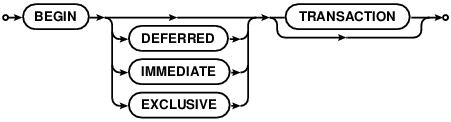
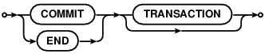
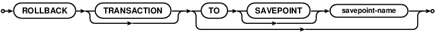

Choose any three.
|
|
SQLite里的SQL
SQL As Understood By SQLite
BEGIN TRANSACTION



对数据库的任何修改都必须在一个事务中。任何会修改数据库的命令（简单来说，除了SELECT以外的所有SQL命令）都会在没有生效的事务时自动开始一个事务。自动开始的事务在最后一个语句结束时会自动提交。
No changes can be made to the database except within a transaction.
Any command that changes the database (basically, any SQL command
other than SELECT) will automatically start a transaction if
one is not already in effect. Automatically started transactions
are committed when the last query finishes.
可以使用BEGIN命令手动开始一个事务。这种事务通常会一直持续到下一个COMMIT或者ROLLBACK命令。不过如果数据库关闭或者发生错误，事务同样会被ROLLBACK，并且会指定ROLLBACK冲突解决算法。更多关于ROLLBACK冲突解决算法的内容请参见ON CONFLICT文档。
Transactions can be started manually using the BEGIN
command. Such transactions usually persist until the next
COMMIT or ROLLBACK command. But a transaction will also
ROLLBACK if the database is closed or if an error occurs
and the ROLLBACK conflict resolution algorithm is specified.
See the documentation on the ON CONFLICT
clause for additional information about the ROLLBACK
conflict resolution algorithm.
END TRANSACTION 是COMMIT的别称。
END TRANSACTION is an alias for COMMIT.
使用BEGIN...COMMIT创建的事务是不支持嵌套的。需要嵌套事务，请使用SAVEPOINT 和 RELEASE命令。上面语法图中ROLLBACK命令中的"TO SAVEPOINT name"子句只适用于SAVEPOINT事务。在一个事务中执行BEGIN命令会失败并产生一个错误，不管这个事务是由SAVEPOINT开始的还是前一个BEGIN开始的。不包含TO子句的COMMIT命令和ROLLBACK命令可以像使用在BEGIN开始的事务中一样使用在SAVEPOINT事务中。
Transactions created using BEGIN...COMMIT do not nest.
For nested transactions, use the SAVEPOINT and RELEASE commands.
The "TO SAVEPOINT name" clause of the ROLLBACK command shown
in the syntax diagram above is only applicable to SAVEPOINT
transactions. An attempt to invoke the BEGIN command within
a transaction will fail with an error, regardless of whether
the transaction was started by SAVEPOINT or a prior BEGIN.
The COMMIT command and the ROLLBACK command without the TO clause
work the same on SAVEPOINT transactions as they do with transactions
started by BEGIN.
事务可以是延时的、立即的和排外的。默认的事务是延时的。延时意味着在数据库第一次存取之前，都是不需要锁的。因此，在一个延时事务中，BEGIN语句本身不会对文件系统做任何事情。在第一次读写操作之前都是不需要锁的。第一次读取会使数据库创建一个SHARED锁，第一次写入操作会创建一个RESERVED锁。由于获取锁被延时到了真正需要的地方，因此有可能另一个线程或进程可能会在当前线程已经在数据库上执行了BEGIN命令之后创建另外一个事务并写入数据库。如果是一个立即事务，那么一旦执行BEGIN命令就会在所有数据库上获取RESERVED锁，而不必等到真正使用数据库。在开始一个BEGIN IMMEDIATE之后其他任何数据库连接都不能写数据库或者执行BEGIN IMMEDIATE 和 BEGIN EXCLUSIVE命令。不过其它进程依然可以继续读取数据库。一个排外事务会在所有数据库上获取一个EXCLUSIVE锁。在BEGIN EXCLUSIVE之后，除了read_uncommitted连接之外的所有数据库连接都不能读取数据库，并且无一例外的所有其他连接都不能在事务提交之前写数据库。
Transactions can be deferred, immediate, or exclusive.
The default transaction behavior is deferred.
Deferred means that no locks are acquired
on the database until the database is first accessed. Thus with a
deferred transaction, the BEGIN statement itself does nothing to the
filesystem. Locks
are not acquired until the first read or write operation. The first read
operation against a database creates a SHARED lock and the first
write operation creates a RESERVED lock. Because the acquisition of
locks is deferred until they are needed, it is possible that another
thread or process could create a separate transaction and write to
the database after the BEGIN on the current thread has executed.
If the transaction is immediate, then RESERVED locks
are acquired on all databases as soon as the BEGIN command is
executed, without waiting for the
database to be used. After a BEGIN IMMEDIATE,
no other database connection will be able to write to the database or
do a BEGIN IMMEDIATE or BEGIN EXCLUSIVE. Other processes can continue
to read from the database, however. An exclusive transaction causes
EXCLUSIVE locks to be acquired on all databases. After a BEGIN
EXCLUSIVE, no other database connection except for read_uncommitted
connections will be able to read the database and no other connection without
exception will be able to write the database until the transaction is
complete.
一个隐式事务（自动开始的事务，不是使用BEGIN开始的事务）在最后一个有效的语句完成后会自动提交。一个语句的完成是以语句的预编译表达式重置或者销毁为准。一个用于增加BLOB I/O计数的打开的sqlite3_blob会被认为是未完成的语句，只有当其被关闭，这个sqlite3_blob才被认为是完成的。
An implicit transaction (a transaction that is started automatically,
not a transaction started by BEGIN) is committed automatically when
the last active statement finishes. A statement finishes when its
prepared statement is reset or
finalized. An open sqlite3_blob used for
incremental BLOB I/O counts as an unfinished statement. The sqlite3_blob
finishes when it is closed.
一个明确的COMMIT命令会立即执行，即使有正在等待SELECT的语句。不过，如果是有正在等待写入的操作，COMMIT命令会失败并返回一个SQLITE_BUSY错误码。
The explicit COMMIT command runs immediately, even if there are
pending SELECT statements. However, if there are pending
write operations, the COMMIT command
will fail with an error code SQLITE_BUSY.
在其他线程或进程在当前数据库上持有一个共享锁以防止数据库被更改的时候，如果试图在当前线程上执行COMMIT命令同样会导致SQLITE_BUSY返回码。如果是在这种情况下COMMIT的失败，事务会继续保持有效，并且可以再稍后有机会再一次尝试COMMIT。
An attempt to execute COMMIT might also result in an SQLITE_BUSY return code
if an another thread or process has a shared lock on the database
that prevented the database from being updated. When COMMIT fails in this
way, the transaction remains active and the COMMIT can be retried later
after the reader has had a chance to clear.
如果有任何等待中的查询，ROLLBACK都会失败并返回SQLITE_BUSY错误码。只读查询和读写查询都会导致ROLLBACK失败，如果有等待读取的曹组，那么ROLLBACK必然会失败（而不像COMMIT可以成功），这是因为，如果数据库的内存镜像相比活跃查询下内容发生了变动，这样就会导致问题。
The ROLLBACK will fail with an error code SQLITE_BUSY if there
are any pending queries. Both read-only and read/write queries will
cause a ROLLBACK to fail. A ROLLBACK must fail if there are pending
read operations (unlike COMMIT which can succeed) because bad things
will happen if the in-memory image of the database is changed out from under
an active query.
如果PRAGMA journal_mode被设置为OFF（禁用了回滚日志文件）那么ROLLBACK命令的行为是未知的。
If PRAGMA journal_mode is set to OFF (thus disabling the rollback journal
file) then the behavior of the ROLLBACK command is undefined.
在事务中响应错误
Response To Errors Within A Transaction
当事务中发生了确定类型的错误，那么这个事务有可能会自动回滚。会引起回滚的错误包括：
If certain kinds of errors occur within a transaction, the
transaction may or may not be rolled back automatically. The
errors that can cause an automatic rollback include:
- SQLITE_FULL: 数据库或磁盘已满。database or disk full
- SQLITE_IOERR: 磁盘I/O错误。disk I/O error
- SQLITE_BUSY: 数据库被其它进程使用。database in use by another process
- SQLITE_NOMEM: 内存溢出。 out or memory
- SQLITE_INTERRUPT: 应用请求处理中断。 processing interrupted by application request
对于这些错误，SQLite只是试图撤销正在执行的一条语句，而同一个事务中之前执行的语句产生的修改会原分不动的保留下来，并继续执行事务。可是，已经执行的语句和发生错误的点对SQLite的回滚和取消整个事务都是必须的。应用可以通过sqlite3_get_autocommit()C语言接口来告诉SQLite采用什么样的方针。（这段话应该有点儿问题。TODO） For all of these errors, SQLite attempts to undo just the one statement it was working on and leave changes from prior statements within the same transaction intact and continue with the transaction. However, depending on the statement being evaluated and the point at which the error occurs, it might be necessary for SQLite to rollback and cancel the entire transaction. An application can tell which course of action SQLite took by using the sqlite3_get_autocommit() C-language interface.
推荐应用通过明确声明一个ROLLBACK命令来响应上面罗列的错误。如果一个事务已经因为错误响应而自动回滚了，那么执行ROLLBACK命令将会失败并返回一个错误，不过这不会导致什么危害。
It is recommended that applications respond to the errors
listed above by explicitly issuing a ROLLBACK command. If the
transaction has already been rolled back automatically
by the error response, then the ROLLBACK command will fail with an
error, but no harm is caused by this.
未来的SQLite版本可能会增加可以引发自动回滚的错误列表。未来的SQLite版本可能会改变错误响应，特别的，我们可以在未来的SQLite版本中通过引发上述错误强制无条件回滚来简化这个接口
Future versions of SQLite may extend the list of errors which
might cause automatic transaction rollback. Future versions of
SQLite might change the error response. In particular, we may
choose to simplify the interface in future versions of SQLite by
causing the errors above to force an unconditional rollback.